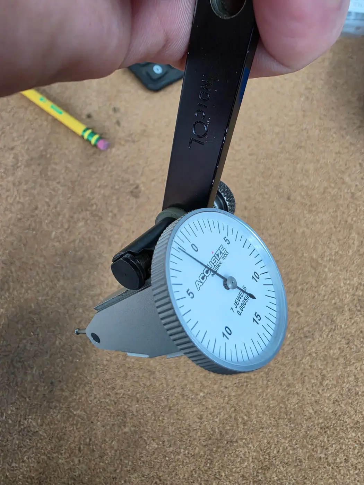
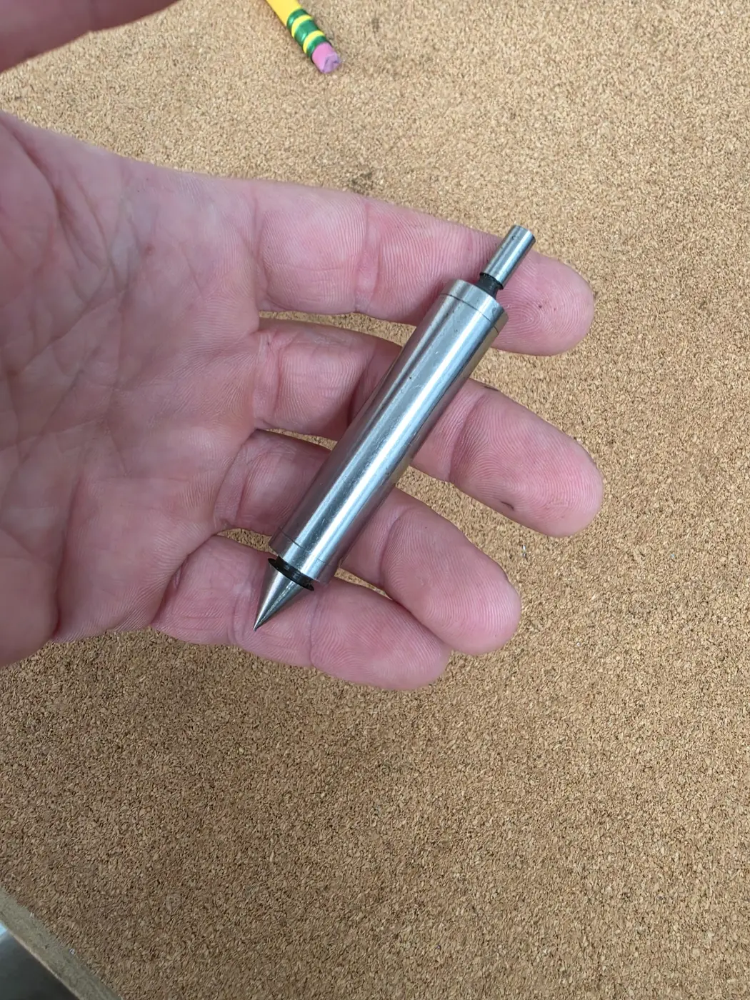
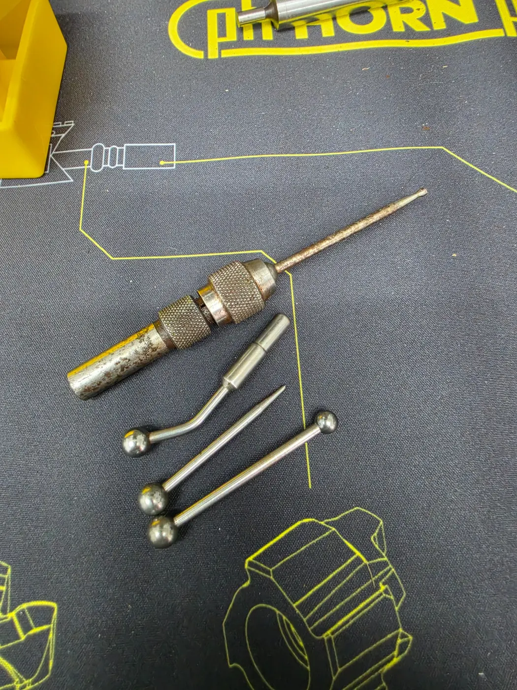
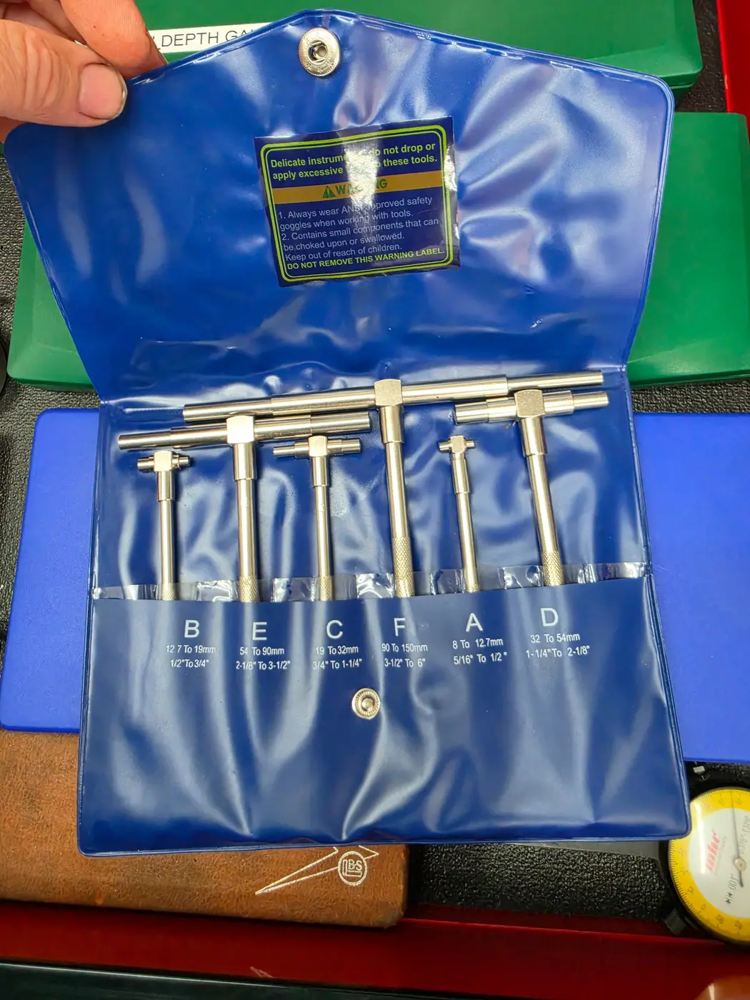
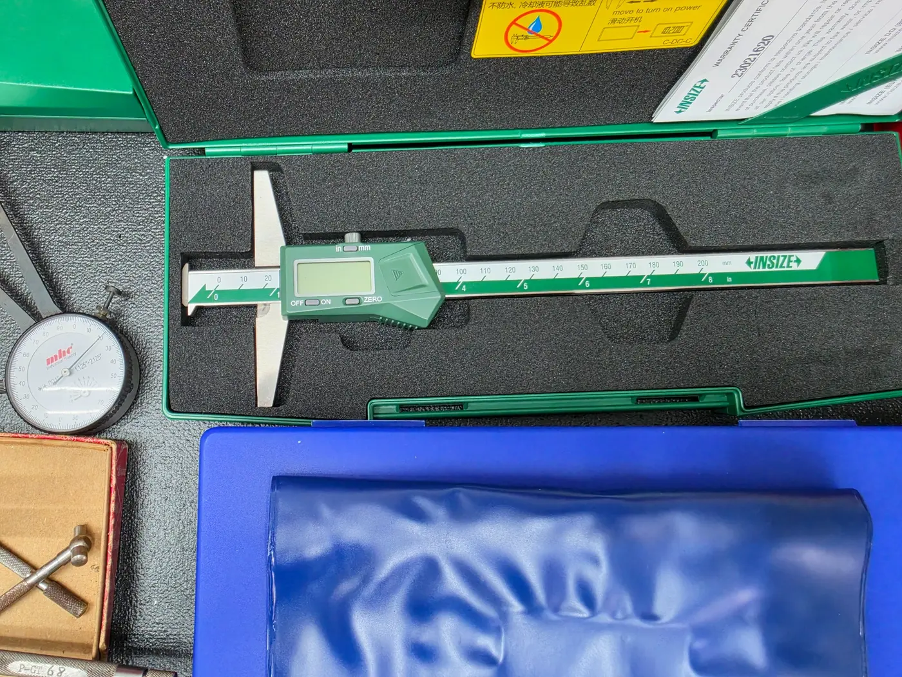
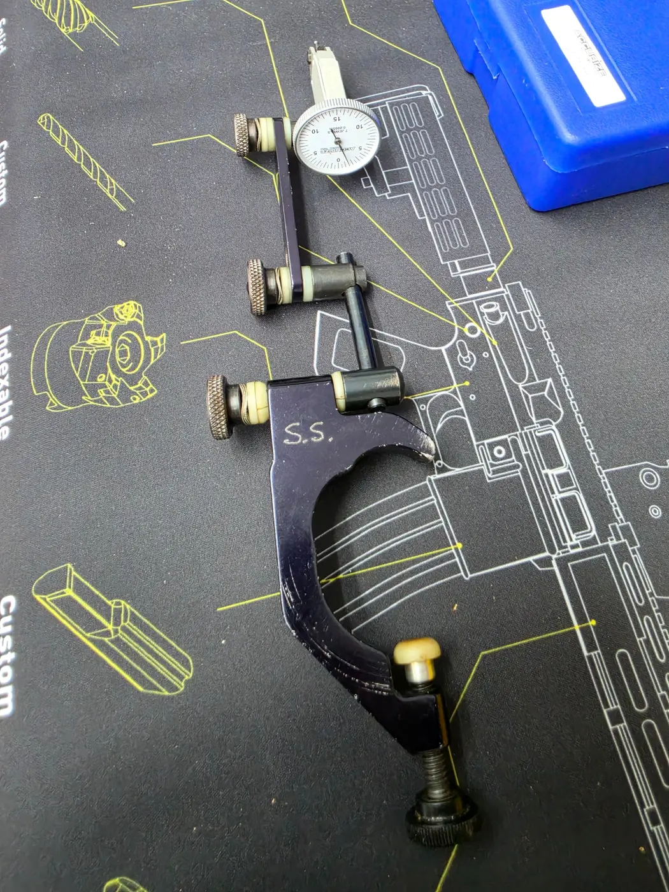
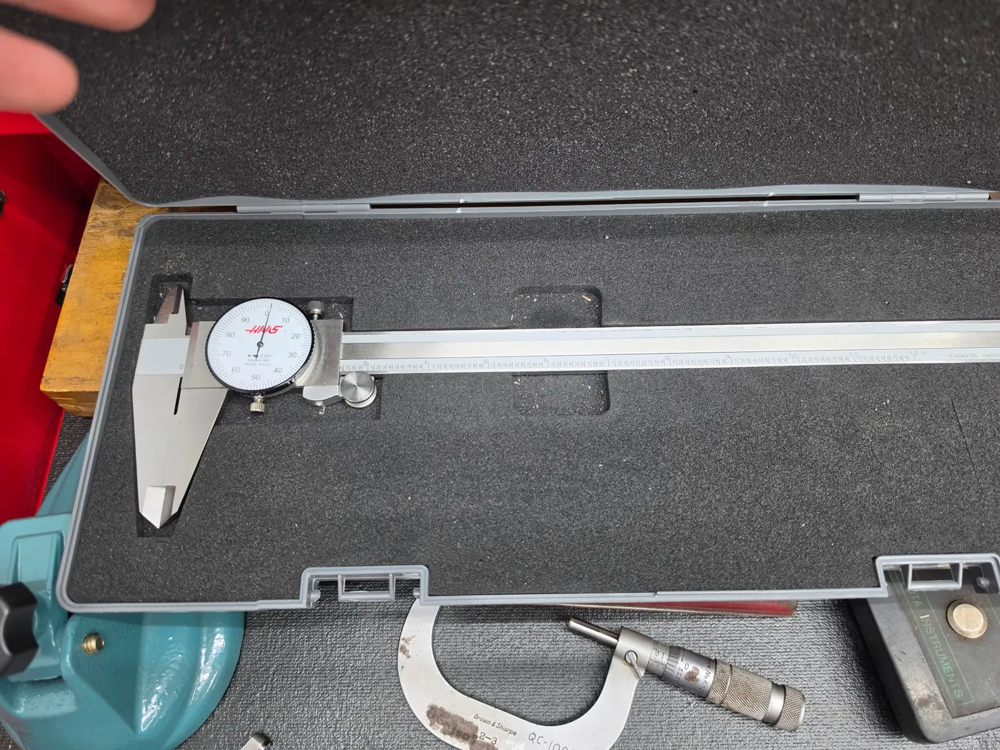

Accusize S900-C118 Vertical Dial Test IndicatorA good starter test indicator for indicating vises, checking runout, and setting up work. It reads in half-thousandths and costs far less than a top-name indicator. I own and use this one. It’s accurate enough for everyday machine-shop setups, and a new machinist can upgrade later if needed.View on Amazon → NEED A PART NOW0
NEED A PART NOW0START SMALL. LEARN THE TRADE.
Starter Tools.
Practical measuring and setup tools for machinists who are just starting out.
BUY WHAT YOU NEED
You don’t need the most expensive tools when you’re starting out.
Buy decent tools that will do the job, learn how to use them, and upgrade later if you stay in the trade. You may not have the money for top-name tools yet, and you may not even know whether machining is the trade you want to stay in. Every tool on this page is something I own and use.
← Back to Things I Use
Four-Piece Edge and Center Finder SetA useful starter set for locating workpiece edges, center-punched locations, scribed lines, shoulders, and grooves on a milling machine. It includes 3/8-inch and 1/2-inch shanks, 0.200-inch and 0.375-inch tips, and pointed center finders. I own and use this set. It gives a new machinist several basic setup tools without spending much money.View on Amazon →
Five-Piece Wiggler and Center-Finder SetAn inexpensive, versatile setup tool for finding centers and scribed lines, locating edges, and checking alignment or runout. The holder accepts several interchangeable attachments for different jobs. I’ve owned and used this set long enough for it to show some wear, and it still does what I need it to do. A solid starter tool without paying for a big-name version.View on Amazon →
Six-Piece Telescoping Gauge Set — 5/16 to 6 InchesA basic set for measuring the inside diameter of holes and bores. Lock the gauge at the bore size, remove it, and measure across it with an outside micrometer. This set covers 5/16 inch through 6 inches. I own and use it. Technique matters with telescoping gauges, but this is a good inexpensive set to learn with before spending hundreds on a name-brand set.View on Amazon →
INSIZE 1144-200A Electronic Double-Hook Depth GaugeA digital depth gauge for measuring grooves, recesses, shoulders, steps, and other features that can be awkward to reach with regular calipers. The double-hook design lets you measure from either direction, and it switches between inches and millimeters. This one measures up to 8 inches or 200 mm. I own and use it, and INSIZE makes decent measuring tools without the price of the biggest names.View on Amazon →
Accusize HE20-1501 Universal Indicator HolderThis holder clamps around the machine spindle and positions a test indicator for indicating vises, checking bores, and setting up work. Its adjustable arms make it easier to reach different locations without fighting a magnetic base. I own and use this holder with the Accusize test indicator listed above. It’s an inexpensive, practical setup for a new machinist.View on Amazon →
Haas 12-Inch Shockproof Dial CaliperA 12-inch caliper is useful for larger parts that a standard 6-inch caliper cannot reach. This one reads in 0.001-inch increments and measures outside dimensions, inside dimensions, steps, and depths. I own and use it. It’s a good general-purpose shop caliper, but use a micrometer when a dimension has a tight tolerance.View at Haas Tooling →A STRAIGHT DISCLOSURE
I may earn a commission. You should still buy the right tool.
As an Amazon Associate I earn from qualifying purchases. It does not change the price you pay, and it does not decide what I recommend.